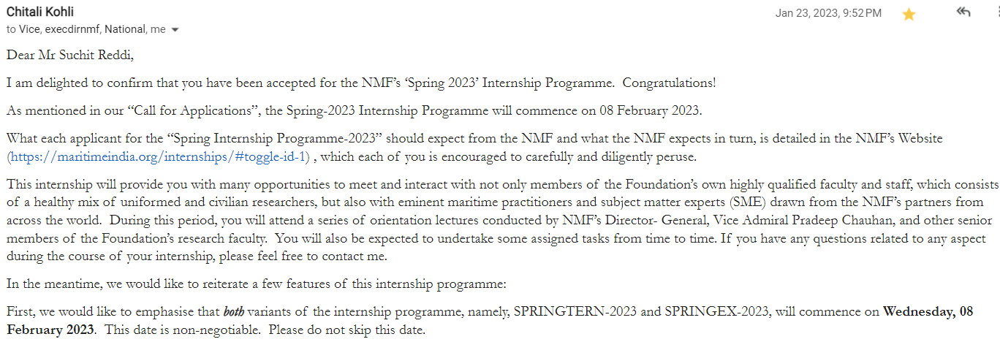
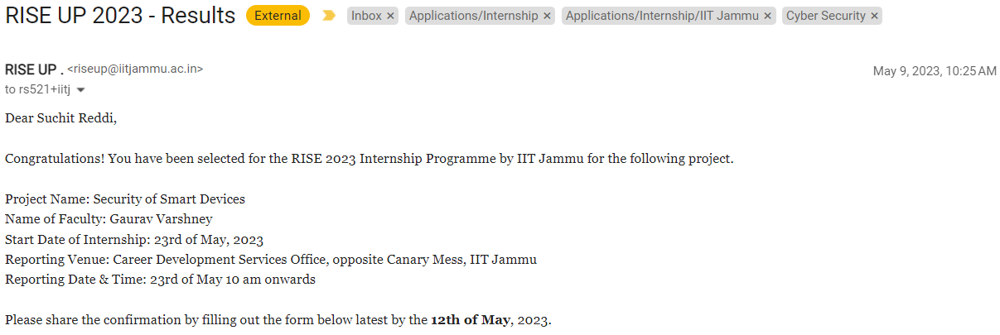

I got selected for a few internships, but I couldn't attend them because of overlapping academics or other
commitments.
Some of them are:
National Maritime Foundation (NMF) Spring Internship 2023 NMF is a
non-profit NGO dedicated to advancing India's maritime
interests. I applied for a Maritime Cybersecurity research internship programme (SPRINGEX-23) for 6 months, and
got selected!
But the time period of the internship collided with my academic semester, not allowing me to attend this amazing
opportunity.

IIT Jammu RISE Research Internship 2023 IIT Jammu is one of
the new IITs in India. Research Internship in
Science and Engineering - Undergraduate Program (RISE-UP) is a prestigious internship program for undergrad
students.
I applied for a research project on "Security of Smart Devices" under Dr. Gaurav Varshney, and got selected!
But I had already accepted an internship offer from Irdeto, so I had to miss out on this opportunity.
